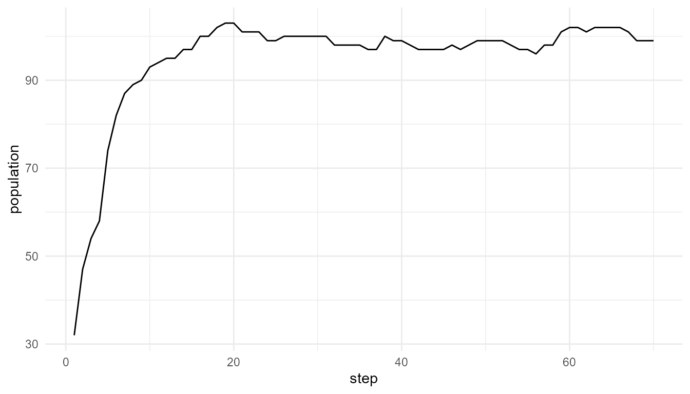

Artificial Life, Emergence, and Origin of Life
Source:vignettes/alife-emergence-origin-life.Rmd
alife-emergence-origin-life.RmdPurpose
This article connects artificial life to emergence and origin-of-life research. Artificial life is useful because it allows learners to explore how life-like organization may arise from simpler interacting processes (Langton 1989; Kauffman 1993; Maynard Smith and Szathmáry 1999; Bedau 2003).
The purpose of this chapter is not to claim that artificial-life simulations fully explain the origin of life. Instead, the goal is to show how simplified models can help learners think about the transition from isolated components to organized, self-maintaining, and evolvable systems.
The guiding question is:
How can simplified artificial systems help us think about the transition from non-life to life-like organization?
Why artificial life matters for origin-of-life thinking
Origin-of-life research asks how non-living chemical systems could have developed features associated with living systems. These features may include organization, metabolism-like activity, reproduction, heredity, variation, selection, and evolvability.
Artificial life contributes to this discussion by providing simplified computational models. These models allow learners to explore how life-like dynamics can arise when simple units interact under constraints.
Artificial-life models are useful because they make abstract ideas visible. A simulation can show how reproduction changes population size, how mutation introduces variation, how selection shifts traits, and how resource limits constrain growth.
However, artificial life is not a replacement for chemistry, geology, or biology. It is a conceptual and computational tool.
Emergence and artificial life
Artificial-life models are often emergent. Population-level behavior arises from individual agents and local rules. Adaptation-like patterns arise from variation, inheritance, selection, and environmental constraint.
For example:
- individual agents consume resources;
- agents reproduce when conditions allow;
- offspring may inherit traits;
- mutation introduces variation;
- some traits affect survival or reproduction;
- population-level patterns appear over time.
The final population pattern is not imposed directly. It emerges through repeated local events.
This makes artificial life a bridge between complexity science and biology.
Origin-of-life relevance
Origin-of-life research asks how chemical systems became organized, self-maintaining, and evolvable. Important ideas include:
- self-organization;
- autocatalytic networks;
- compartmentalization;
- energy flow;
- information-bearing molecules;
- reproduction-like continuity;
- selection-like processes;
- environmental constraints;
- evolvability.
These ideas are difficult because life is not just a collection of molecules. Life involves organized processes. Molecules must interact in ways that support persistence, repair, reproduction, and adaptation.
This is where emergence becomes important. The properties of a life-like system are not obvious from isolated parts alone. They depend on the organization of interactions.
Components versus organization
A central lesson from origin-of-life research is that having the right components is not enough. The components must be organized in the right way.
For example:
| Component or process | Why it matters |
|---|---|
| Molecules | Provide the material basis |
| Energy flow | Maintains activity away from equilibrium |
| Boundaries | Create inside/outside organization |
| Reaction networks | Support transformation and continuity |
| Heredity | Allows information to persist |
| Variation | Creates novelty |
| Selection | Changes populations over time |
| Environment | Provides constraints and opportunities |
Artificial-life simulations simplify these ideas. They usually do not model real molecules, but they can model abstract versions of reproduction, mutation, selection, resources, and population change.
What artificialLifeR can represent
artificialLifeR provides simplified functions that
illustrate life-like dynamics.
| Function | Conceptual role |
|---|---|
create_agents() |
Creates a starting population with simple traits |
simulate_resource_competition() |
Shows how resources constrain agents |
simulate_reproduction() |
Shows how reproduction can create continuity |
simulate_mutation() |
Shows how variation can enter a population |
simulate_selection() |
Shows how traits can affect survival or success |
simulate_population_dynamics() |
Shows how populations change over time |
measure_life_like_complexity() |
Summarizes diversity, energy, and population-level patterns |
plot_alife_sim() |
Visualizes artificial-life simulation outputs |
These functions are educational abstractions. They help learners think about the logic of life-like organization, not the detailed chemistry of early Earth.
Example: population as emergent outcome
The following example simulates simplified population dynamics.
pop <- simulate_population_dynamics(
initial_population = 30,
steps = 70,
resource_level = 1.0,
mutation_rate = 0.10,
seed = 11
)
head(pop$summary)
#> step population mean_energy mean_efficiency trait_sd
#> 1 1 32 1.1769940 0.5122002 0.09672852
#> 2 2 47 0.9847399 0.5246195 0.09190712
#> 3 3 54 1.0401196 0.5208418 0.08919721
#> 4 4 58 1.1412487 0.5186052 0.08826737
#> 5 5 74 1.0243865 0.5286126 0.09749325
#> 6 6 82 1.0088500 0.5292766 0.09468332Plot population change
plot_alife_sim(
pop$summary,
x = "step",
y = "population",
type = "line"
)
Interpretation
The population curve emerges from birth, death, energy, mutation, and selection-like processes. It is not imposed directly as a final shape.
A careful interpretation is:
The simulation illustrates how population-level change can arise from simplified artificial-life rules.
An overstatement would be:
The simulation explains how life began.
The first statement is appropriate. The second is too strong.
This mirrors a broader explanatory pattern in origin-of-life thinking: organized wholes must be explained through interacting processes, not isolated parts alone.
Example: mutation and variation
Variation is essential for open-ended change and evolution. Mutation-like processes introduce differences among agents or offspring.
agents_for_mutation <- create_agents(
n_agents = 40,
seed = 4
)
mutated <- simulate_mutation(
agents_for_mutation,
trait = "efficiency",
mutation_rate = 0.15,
mutation_sd = 0.05,
lower = 0.01,
upper = 1,
seed = 4
)
head(mutated)
#> agent x y energy speed efficiency
#> 1 1 0.585800305 0.93831909 1.2015563 0.07573857 0.4866764
#> 2 2 0.008945796 0.24217109 1.0272303 0.04571701 0.4770642
#> 3 3 0.293739612 0.56559453 1.1938769 0.03850509 0.6873760
#> 4 4 0.277374958 0.18089910 0.7467927 0.02058546 0.4662612
#> 5 5 0.813574215 0.90449929 0.8768510 0.02934523 0.5973270
#> 6 6 0.260427771 0.08429131 0.8706781 0.02386950 0.5987828
#> reproduction_threshold age alive
#> 1 1.534203 0 TRUE
#> 2 1.549083 0 TRUE
#> 3 1.406800 0 TRUE
#> 4 1.357211 0 TRUE
#> 5 1.597577 0 TRUE
#> 6 1.345366 0 TRUEInterpretation of mutation
The output shows a simplified population in which traits may vary. In real biology, mutation involves molecular mechanisms such as changes in genetic sequences. In this package, mutation is represented abstractly as trait variation.
The point is not chemical realism. The point is conceptual clarity:
Variation provides raw material for selection-like processes.
Without variation, populations have less capacity to change. With variation, different traits can become more or less common under different conditions.
Example: selection-like dynamics
Selection occurs when some traits are associated with greater survival or reproduction than others. In artificial-life models, this can be represented in simplified form.
agents_for_selection <- create_agents(
n_agents = 50,
seed = 6
)
selected <- simulate_selection(
agents_for_selection,
survival_fraction = 0.40,
stochastic = FALSE,
seed = 6
)
head(selected)
#> agent x y energy speed efficiency
#> 43 43 0.08002284 0.39206378 1.177253 0.06578186 0.6336832
#> 4 4 0.38009392 0.82371378 1.189489 0.03018688 0.6030117
#> 31 31 0.52177349 0.18803406 1.391215 0.05332678 0.5035738
#> 29 29 0.27440154 0.05394039 1.123900 0.04491791 0.6179002
#> 47 47 0.11738552 0.50567825 1.148549 0.05205753 0.5787568
#> 33 33 0.95615189 0.33274923 1.334079 0.03079871 0.4880637
#> reproduction_threshold age alive fitness
#> 43 1.478374 0 TRUE 0.7460052
#> 4 1.451954 0 TRUE 0.7172756
#> 31 1.505163 0 TRUE 0.7005793
#> 29 1.390950 0 TRUE 0.6944580
#> 47 1.463095 0 TRUE 0.6647307
#> 33 1.548650 0 TRUE 0.6511156Interpretation of selection
The model may show that some agents or traits are more likely to persist. This is selection-like behavior, but it is not a full model of biological evolution.
A careful interpretation is:
The simulation illustrates how trait differences can affect survival or success in a simplified model.
An overstatement would be:
The simulation fully represents natural selection.
The model is useful because it separates the logic of selection from the full complexity of biological systems.
Artificial life as a bridge model
Artificial life works as a bridge between abstract emergence and biological life.
| Domain | Main focus | Artificial-life connection |
|---|---|---|
| Emergence | System-level patterns from local rules | Population dynamics from agent rules |
| Complexity science | Interacting parts and nonlinear outcomes | Agents, resources, feedback, constraints |
| Origin of life | Transition to life-like organization | Reproduction, variation, selection, persistence |
| Evolution | Change across generations | Trait variation and selection-like dynamics |
| Artificial intelligence | Adaptive artificial systems | Agents, environments, learning-like behavior |
This bridge role is important. It allows learners to explore life-like principles without claiming that the simulation is a full biological system.
What artificial life contributes
Artificial-life models can help clarify:
- how local rules produce global patterns;
- how environmental constraints shape survival;
- how reproduction creates continuity;
- how mutation introduces novelty;
- how selection changes populations;
- how resources limit growth;
- how system-level organization can emerge;
- why life-like behavior requires interactions, not isolated parts.
These contributions are conceptual and educational.
What artificial life does not solve
Artificial life does not automatically solve the origin of life. A simulation may show life-like dynamics without being chemically realistic.
Origin-of-life research requires evidence and mechanisms from:
- chemistry;
- geology;
- thermodynamics;
- molecular biology;
- planetary science;
- evolutionary theory.
A digital or abstract simulation cannot replace this evidence.
artificialLifeR does not model:
- real prebiotic chemistry;
- actual RNA or DNA replication;
- lipid membrane formation;
- hydrothermal vents;
- mineral surface chemistry;
- real metabolic pathways;
- laboratory origin-of-life experiments.
It provides simplified conceptual models.
Emergence is not a shortcut
Emergence should not be used as a vague explanation. Saying “life emerged” is only the beginning. A stronger explanation must specify:
- what components existed;
- how they interacted;
- what energy sources were available;
- what constraints shaped the system;
- how continuity was maintained;
- how variation appeared;
- how selection-like processes operated;
- how the system became more life-like over time.
Artificial-life models can help learners explore this style of explanation, but they do not provide the final answer.
Relation to other portfolio packages
This chapter also helps connect the broader package portfolio.
| Package | Main focus | Relationship |
|---|---|---|
lifesimulatoR |
Origin-of-life simulations | More directly focused on abiogenesis concepts |
emergenceModelR |
Emergence and complexity | Provides the general theory of local rules and system-level patterns |
artificialLifeR |
Artificial-life dynamics | Explores agents, reproduction, mutation, selection, and populations |
consciousnessModelR |
Consciousness theory simulations | Explores attention, broadcast, integration, and access-like models |
Together, these packages form a coherent theme:
How organized systems arise, adapt, and generate higher-level patterns.
Responsible interpretation
It is better to say:
The model illustrates artificial life-like organization.
than:
The model explains how life began.
It is better to say:
The simulation helps explore the logic of reproduction, variation, selection, and constraint.
than:
The simulation proves a theory of abiogenesis.
It is better to say:
Artificial life provides conceptual tools for thinking about origin-of-life questions.
than:
Artificial life replaces chemistry or laboratory evidence.
Educational use
This chapter can support several classroom or self-study questions:
- What makes a system life-like?
- What is the difference between life-like behavior and biological life?
- Why are reproduction, variation, and selection important?
- Why does environment matter?
- How can population-level patterns arise from local rules?
- Why is origin-of-life research not solved by simulation alone?
- What is the role of emergence in life-like organization?
These questions help learners use artificial life carefully and productively.
Key takeaway
Artificial life provides a conceptual bridge between emergence and origin-of-life research. It helps learners explore how life-like organization can arise from agents, rules, resources, reproduction, mutation, selection, and environmental constraints.
artificialLifeR does not explain the origin of life
completely. Its value lies in making the logic of life-like systems
visible and teachable, while preserving the distinction between toy
models and real prebiotic chemistry.